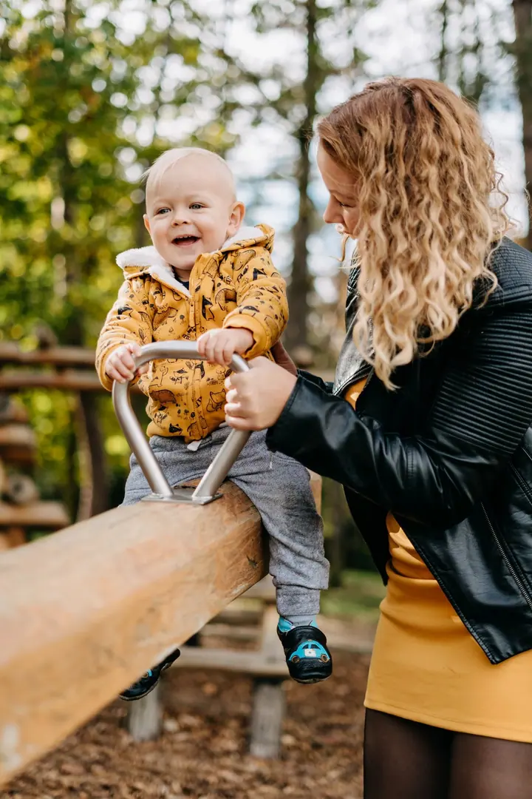

jedna
Svatby
Na svatby jezdím po celé republice i do zahraničí. Nezasahuji do dění, jsem jeho součástí a fotím bez blesků a nepříjemných póz.

Svatební a lifestylová fotografka · Krušné hory, Jižní Morava, Opavsko

Jmenuji se Marie Veselá, ale klidně mi říkejte Májo. Fotím svatby po celé republice i v zahraničí a rodiny a páry venku v přírodě. Focení se mnou má být hlavně příjemný výlet, žádné strojené pózy.
Více o mně
Co fotím
jedna
Na svatby jezdím po celé republice i do zahraničí. Nezasahuji do dění, jsem jeho součástí a fotím bez blesků a nepříjemných póz.
dvě
Uvolněné focení venku s přirozeným světlem, klidně i u vás doma. Společně vybereme místo, kde se budete cítit dobře.
tři
Focení vašeho příběhu jako výlet ve dvou. Vezměte lahev, pusťte si oblíbené písničky a nechte zbytek na mně.
Pravidelně fotím obsah pro kavárny a malé značky. Nafotím produkty na Instagram i propagační snímky pro váš podnik.

Focení musí být v první řadě příjemná zábava.


Za objektivem
Foťák mám v ruce od dětství, kdy jsem rodičům na dovolené v Chorvatsku brala jednorázové filmové foťáčky a fotila květiny, stromy a mořské vlny. Po ekonomce v Brně jsem k ekonomii cestu nenašla a skočila jsem rovnou na volnou nohu. První svatbu mám za sebou už před sedmi lety a pořád mě to baví stejně jako na začátku.
Můj styl je postavený na barvách. Modrá je modrá, červená zůstává červenou, nic neodbarvuji ani uměle neupravuji. Inspirují mě staré analogové fotky a nebojím se ani černobílé, když podtrhne emoce. Nefotím podle trendů, které za pár měsíců vyšumí, chci, aby vám fotky vydržely celý život.
Nejbližší je mi příroda, lesní svatby jsou moje největší srdcovka. Doma mám dva kocoury, Noxe a Salema, miluju kafe a severské krajiny. S kamarádkou Káťou natáčím podcast Dneska Edituju a občas fotím i na kinofilm, s tím začala dědova Praktica L2.
Marie
Napište mi přes formulář. Obratem vám pošlu přehledný ceník a doporučím variantu, která se k vaší svatbě nebo focení hodí nejvíc.
Probereme, jak si den nebo focení představujete. U focení příběhů spolu vybereme oblečení i lokaci, u zážitkové varianty podle moodboardu.
Žádné reflektory ani blesky za denního světla a žádné nepříjemné pózy. Pustíme si písničky, popovídáme si a já zachytím, co se opravdu děje.
Každou fotku pečlivě upravím a dostanete je ve vlastní online galerii. K tomu slevu na tisk u kvalitnifotky.cz.
Portfolio
Fotografie jsou ilustrační
Otázky
Neupravené fotky neodevzdávám. Mezi souborem RAW a hotovou fotkou je dlouhá cesta, bez které by moje práce nebyla kompletní.
Focení příběhů nabízím ve dvou variantách: klasická za 4 000 Kč a zážitková za 6 000 Kč. Svatební ceník vám pošlu na e-mail po vyplnění poptávky. Ceny berte spíš orientačně, každé navýšení budete mít pod kontrolou.
Fotím po celé republice i v Evropě. Doprava je zdarma do 30 km od Slaného nebo do 15 km od Opavy, dál účtuji 6 Kč/km.
Nejraději fotím venku s přirozeným světlem, ráda ale přijedu i do kavárny nebo k vám domů. Ateliér umím zařídit.
Určitě! Zvířátka miluju, tak je klidně vezměte s sebou.